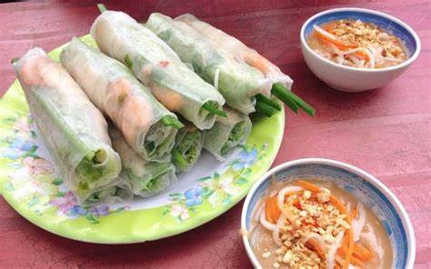
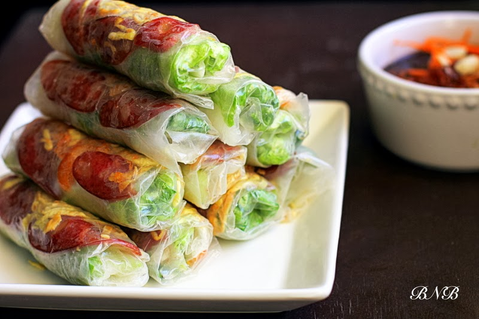
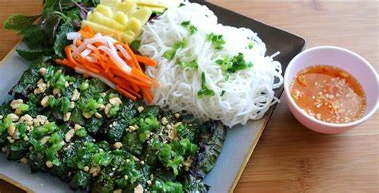
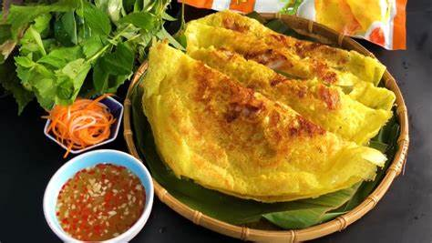

Ngon, tiện lợi, dễ ăn là lý do món gỏi cuốn được bày bán khắp nơi tại TP.HCM. Thành phần món ăn gồm tôm, thịt luộc hoặc tai heo, xà lách, rau thơm, hẹ, bún và bánh tráng. Món gỏi cuốn tôm thịt thường được ăn cùng nước mắm chua cay mặn ngọt hay sốt tương đậu, mắm nêm… Món ăn có nguồn gốc từ nhiều tỉnh Nam Bộ mang hương vị thanh mát, nhẹ bụng, phù hợp đổi vị trong những ngày nóng bức. Gỏi cuốn không sử dụng dầu mỡ để chiên xào. Món ăn từng được tờ CNN bình chọn là một trong 50 món ăn ngon nhất thế giới.
Nhấp vào ảnh để biết thêm chi tiết.
Cuốn bò bía vừa vặn với độ dai từ vỏ bánh và nhân nóng hoà quyện, mang lại dư vị khó quên.Nhắc về ẩm thực Đà Nẵng, không thể không kể đến bánh tráng cuốn thịt heo, món ăn dân dã nhưng đậm đà của người miền Trung. Món ăn cũng có mặt tại TP.HCM và nhanh chóng được ưa thích. Nét độc đáo nằm ở miếng thịt heo lẫn mỡ, kèm da ở hai đầu. Rau sống ăn kèm cũng khá phong phú, gồm xà lách, dưa leo, giá, rau thơm, xoài, chuối chát, khế. Mắm nêm nguyên chất được pha thêm tỏi, ớt giã nhuyễn, nước cốt thơm để có độ ngọt, mặn vừa phải. Khi thưởng thức, thực khách sẽ cuốn bánh tráng miền Trung với thịt, rau sống.
Nhấp vào ảnh để biết thêm chi tiết.
Bò lá lốt là món ăn nổi tiếng của ẩm thực Việt Nam, thịnh hành ở vùng Nam Bộ. Vị ngon món ăn nằm ở phần thịt bò bằm ướp thấm và cách pha chế mắm nêm đúng chuẩn. Từng cuộn bò lá lốt nướng thơm lừng, kết hợp rau sống, bún sợi, đậu phộng, cùng sốt chấm đặc trưng, tạo hương vị hòa quyện hấp dẫn thực khách.Bạn chỉ cần làm ướt miếng bánh tráng mỏng, trải đều xà lách, rau thơm, bún và cuối cùng là miếng bò lá lốp lên và cuốn lại. Món ăn tròn vị khi chấm ngập trong mắm nêm pha ớt cay cay, mặn mặn.
Nhấp vào ảnh để biết thêm chi tiết.
Bánh xèo là món ăn truyền thống của Việt Nam. Loại bánh này làm từ bột với phần nhân đa dạng như tôm, mực, thịt bò… Ngày nay, thực khách có thể dễ dàng tìm thấy biến tấu của món ăn tại TP.HCM. Trong khi bánh xèo miền Tây thường được đúc trên chảo lớn thì bánh xèo miền Trung thường khá nhỏ với lớp vỏ giòn tan, nhân tôm, thịt bò.
Nhấp vào ảnh để biết thêm chi tiết.